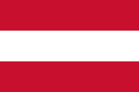
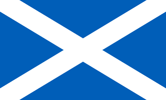
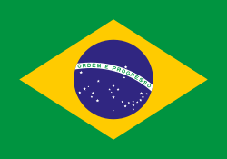
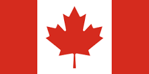
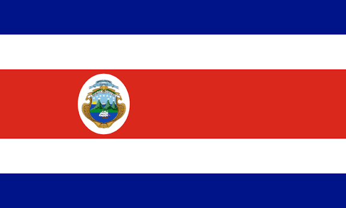

¿De qué se trató el Mundial de 1986?
La Copa Mundial de la FIFA 1986 fue la decimotercera edición del torneo y se disputó en México entre el 31 de mayo y el 29 de junio de 1986. Representó un hito sin precedentes en la historia del balompié al convertirse México en el primer país en organizar dos veces una Copa del Mundo. El evento estuvo impregnado de una profunda emotividad y un espíritu de superación nacional, ya que apenas ocho meses antes del puntapié inicial, la nación anfitriona sufrió un devastador terremoto que puso en severo riesgo la realización de la competencia.
El campeonato estuvo marcado por hitos institucionales de gran relevancia histórica. A nivel deportivo, el certamen asombró al planeta al convertirse en el escenario de la consagración individual más brillante e indiscutida de todos los tiempos, protagonizada por Diego Armando Maradona. En el plano organizativo, se mantuvo el cupo extendido de 24 selecciones participantes instaurado en la edición anterior, pero se modificó sustancialmente el formato de la segunda ronda, eliminando los complejos triangulares de 1982 para dar paso al emocionante y definitivo sistema de eliminación directa desde los octavos de final.
México organizó un certamen de altísimo nivel logístico, superando las adversidades climatológicas del intenso verano y las grandes altitudes de sus sedes. En el plano futbolístico, la selección de Argentina, dirigida por Carlos Salvador Bilardo, demostró un enorme oficio táctico, solidez colectiva y una genialidad artística inalcanzable. En la gran final, disputada en el majestuoso Estadio Azteca de la Ciudad de México ante más de 114.000 espectadores, Argentina derrotó a Alemania Federal por 3-2 en un dramático encuentro, consolidando la leyenda de su capitán.
Informacion que tenes que saber
Info general
- Pais Anfitrion: México
- Fecha de Inicio:
31 de Mayo de 1986
(31/05/1986) - Fecha de Finalizacion:
29 de Junio de 1986
(29/06/1986) - Duracion: 29 dias
- Organizador: FIFA
- Edicion: XIII
Estadisticas
- Partidos jugados: 52
- Goles anotados: 132
- Promedio de gol: 2,54
- Máximo goleador:
Gary Lineker
(6 goles) - Partido decisivo:
Argentina 3 - 2 Alemania Federal
info de la Ciudad
- Ciudades Sede: 11
- Selecciones Participantes: 24
- Estadios Utilizados: 12
- Estadio Principal:
Estadio Azteca
Podio
| Posicion | Seleccion | Bandera |
|---|---|---|
| 1º Puesto | Argentina |  |
| 2º Puesto | Alemania Federal |  |
| 3º Puesto | Francia |  |
| 4º Puesto | Bélgica |  |
Identidad del torneo: Diseño, Marketing, Medios y Legado
Balón Oficial: Adidas Azteca
Fabricado por la firma alemana Adidas, el Azteca supuso una de las revoluciones tecnológicas y estéticas más disruptivas de la industria. Rompiendo con la línea visual del cuero tradicional del Tango, introdujo un diseño basado en motivos inspirados en la arquitectura y los murales de la civilización azteca. Fue el primer balón 100% sintético en la historia de los mundiales, asegurando una impermeabilidad absoluta y una durabilidad sin precedentes sobre terrenos duros.
Mascota Oficial: "Pique"
Un chile jalapeño verde animado que lucía un sombrero de paja mexicano, un poblado bigote negro y vestía la camiseta roja de la selección local. Irradiaba simpatía, picardía y el carácter festivo de la cultura mexicana.
Canción Oficial: "El mundo unido por un balón"
Compuesta por Juan Carlos Abara, se convirtió en un himno de integración masiva, exaltando la paz universal y la hermandad de los pueblos a través del juego limpio.
Cartel Oficial
Obra fotográfica conceptual de vanguardia diseñada por Annie Leibovitz, mostraba la imponente sombra de una sección del Estadio Azteca proyectada sobre una superficie, coronada por el brillo del sol y un balón de fútbol.
Televisión y avances en la cobertura
México 1986 consolidó las transmisiones internacionales de alta definición de la época, masificando las tomas aéreas y las cámaras superlentas. El fenómeno de "La Ola" en las tribunas se convirtió en un símbolo universal de la fiesta en las gradas.
Película Oficial: "Hero"
Documental oficial aprobado por la FIFA, musicalizado por Rick Wakeman, centrado en las figuras de Hugo Sánchez, Michel Platini, Michael Laudrup y Diego Armando Maradona.
Álbum Panini
Considerado una de las obras cumbre del coleccionismo, incluyó cromos especiales satinados para las caricaturas de los equipos y las sedes.
Historia completa de la Copa Mundial de la FIFA 1986
Originalmente, la FIFA había otorgado la sede de este certamen a Colombia en 1974. Sin embargo, en 1982, el gobierno colombiano declaró la renuncia formal ante la imposibilidad económica de cumplir con las severas exigencias comerciales de la FIFA dirigidas por João Havelange. México emergió como el gran salvador de la organización, siendo ratificado en 1983. En septiembre de 1985, un devastador sismo azotó la Ciudad de México, sembrando dudas globales; no obstante, la infraestructura de los estadios resistió firmemente y el comité organizador ratificó el torneo.
La fase de clasificación repartió 24 boletos, dejando fuera a selecciones de la talla de los Países Bajos y la subcampeona de 1978, Suecia. En contraste, el torneo presenció los debuts absolutos de tres naciones: Canadá, Irak y Dinamarca, siendo esta última la gran sensación de la primera fase al desplegar un fútbol ultraofensivo apodado la "Dinamita Danesa", que incluyó una goleada por 6-1 sobre Uruguay.
Desarrollo del torneo
El certamen inició el 31 de mayo de 1986. En la fase de grupos, el campeón defensor, Italia, avanzó con dudas tras empatar con la Argentina de Maradona (1-1). Marruecos hizo historia para el fútbol africano al ganar el Grupo F por encima de Inglaterra, Polonia y Portugal, convirtiéndose en la primera selección de dicho continente en avanzar a la segunda ronda en una Copa del Mundo.
A partir de los octavos de final, el torneo adoptó el sistema de eliminación directa. Francia eliminó a Italia (2-0) y luego dejó fuera a Brasil en una tanda de penaltis épica en Guadalajara. Mientras tanto, el 22 de junio, el Estadio Azteca albergó el partido más famoso de la historia del fútbol: Argentina contra Inglaterra por los cuartos de final, un duelo cargado de una enorme tensión geopolítica residual por la Guerra de las Malvinas. En una ráfaga de genialidad, Maradona anotó el primer gol con la mano (bautizado por él mismo como "La mano de Dios") y, apenas cuatro minutos después, recorrió 60 metros eludiendo a seis rivales para marcar el "Gol del Siglo".
La gran final
En semifinales, Argentina despachó a Bélgica con otros dos goles antológicos de Maradona (2-0), mientras que Alemania Federal doblegó a Francia (2-0). El 29 de junio, la gran final enfrentó a la disciplina táctica germana contra la inspiración albiceleste. Argentina se adelantó 2-0 con goles de José Luis Brown y Jorge Valdano. Con un orgullo inquebrantable, los alemanes empataron de forma agónica a través de Karl-Heinz Rummenigge y Rudi Völler tras sendos saques de esquina. Sin embargo, a tres minutos del cierre, Maradona filtró una asistencia magistral de primera intención para Jorge Burruchaga, quien corrió en solitario y definió con frialdad ante Harald Schumacher para sellar el 3-2 definitivo, desatando la gloria de Argentina.
Selecciones Participantes
Europa
Alemania Federal 
Austria Bélgica  Bulgaria
Bulgaria 
Escocia España Francia
España Francia  Inglaterra
Inglaterra  Italia (Vigente campeón)
Italia (Vigente campeón)  Irlanda del Norte
Irlanda del Norte  Polonia
Polonia  Unión Soviética
Unión Soviética  Dinamarca
Dinamarca  Hungría
Hungría  Portugal
Portugal Sudamérica
Argentina 
Brasil Uruguay
Uruguay  Paraguay
Paraguay Norteamérica, Centroamérica y Caribe
 México (Anfitrión)
México (Anfitrión) 
CanadáAsia
 Corea del Sur
Corea del Sur  Irak
Irak África
 Argelia
Argelia  Marruecos
Marruecos
Sedes |
||||
|---|---|---|---|---|
| México 1986 desplegó un total de 12 estadios repartidos en 11 ciudades, destacando el Estadio Azteca de la Ciudad de México como sede principal y escenario de la gran final, el partido más famoso de la historia y la consagración de Maradona. | ||||
| Nombre del Estadio | Estadio | Descripción | Capacidad aprox. | Partidos Jugados |
Estadio Azteca |
 |
Ubicado en la Ciudad de México, fue el estadio principal del torneo. Allí se disputaron el famoso Argentina-Inglaterra de cuartos de final y la gran final entre Argentina y Alemania Federal. | 114.600 | 9 |
Estadio Olímpico Universitario |
 |
Situado también en la Ciudad de México, fue una de las sedes secundarias más utilizadas del certamen. | 72.000 | 4 |
Estadio Jalisco |
 |
Ubicado en Guadalajara, fue una de las sedes principales del interior del país, con gran cantidad de partidos disputados. | 56.000 | 6 |
Estadio Tres de Marzo |
 |
Situado en Zapopan, dentro de la zona metropolitana de Guadalajara. | 30.000 | 3 |
Estadio Cuauhtémoc |
 |
Ubicado en Puebla, fue una de las sedes con mayor cantidad de partidos del interior del país. | 46.000 | 5 |
Estadio Neza 86 |
 |
Situado en Nezahualcóyotl, en la zona metropolitana de la Ciudad de México. | 34.500 | 3 |
Estadio Nou Camp |
 |
Ubicado en León, Guanajuato. | 35.000 | 4 |
Estadio Nemesio Díez (Toluca '70) |
 |
Situado en Toluca, Estado de México. | 32.000 | 3 |
Estadio Tecnológico |
 |
Ubicado en Monterrey, Nuevo León. | 38.000 | 4 |
Estadio Universitario |
 |
Situado en San Nicolás de los Garza, zona metropolitana de Monterrey. | 44.000 | 4 |
Estadio Corregidora |
 |
Ubicado en Querétaro. | 40.400 | 4 |
Estadio Sergio León Chávez |
 |
Situado en Irapuato, Guanajuato. | 31.300 | 3 |
Arbitros de la Copa Mundial de la FIFA 1986 por pais
| Arbitros | Pais |
|---|---|
| Ali Bennaceur (Argentina-Inglaterra) |  |
| Romualdas Juška | |
| Berny Ulloa Morera |  |
| Romualdo Arppi Filho (Árbitro de la final) | |
| Hernán Silva |  |
| Bob Valentine | |
| Joël Quiniou | |
| Luigi Agnolin | |
| José Luis Martínez Bazán | |
| George Courtney | |
| Volker Roth | |
| Antonio R. Márquez | |
| Jan Keizer |  |
| Bogdan Dotchev | |
| Valeri Butenko | |
| Carlos Espósito | |
| Jamal Al-Sharif |  |
| Ioan Igna |  |
| Erik Fredriksson |  |
| Chris Bambridge |  |
Resumen del torneo — Copa Mundial de la FIFA 1986
Formato del torneo
El torneo mantuvo el número de 24 selecciones participantes adoptado en España 1982, pero modificó sustancialmente la estructura del certamen para hacerlo más competitivo. En la primera fase de grupos, las 24 selecciones se dividieron en 6 grupos de 4 equipos, clasificando los dos mejores de cada sector y los cuatro mejores terceros lugares, completando un cuadro de 16 clasificados. Como novedad, se eliminó por completo la segunda fase de triangulares de la edición anterior: los 16 clasificados se emparejaron directamente en llaves de Octavos de Final, avanzando mediante partidos únicos (con prórroga y penaltis en caso de empate) hacia los Cuartos de Final, Semifinales, definición por el Tercer Puesto y la Gran Final.
Máximos goleadores — Copa Mundial de la FIFA 1986
| Jugador | Goles | Pais |
|---|---|---|
| Gary Lineker | 6 | |
| Diego Armando Maradona | 5 | |
| Careca | 5 | |
| Emilio Butragueño | 5 | |
| Jorge Valdano | 4 | |
| Preben Elkjær Larsen | 4 | |
| Igor Belanov | 4 | |
| Alessandro Altobelli | 4 | |
Equipo estelar — Copa Mundial de la FIFA 1986
Equipo elegido por los medios internacionales tras la finalización del torneo.
Portero
🧤 Harald Schumacher (Alemania Federal)Defensas
🛡️ Josimar (Brasil)🛡️ Manuel Amoros (Francia)
🛡️ Júlio César (Brasil)
🛡️ Thomas Berthold (Alemania Federal)
Mediocampistas
⚙️ Michel Platini (Francia)⚙️ Diego Armando Maradona (Argentina)
⚙️ Jean Tigana (Francia)
⚙️ Jan Ceulemans (Bélgica)
Delanteros
⚽ Gary Lineker (Inglaterra)⚽ Careca (Brasil)
Controversias de la Copa Mundial de la FIFA 1986
-
"La Mano de Dios"
La máxima controversia de la historia de los mundiales ocurrió en el encuentro de cuartos de final entre Argentina e Inglaterra. En el minuto 51, Diego Maradona saltó a disputar un balón dividido con el guardameta inglés Peter Shilton y propulsó la pelota con su mano izquierda para introducirla en la red. Pese a las furiosas protestas inglesas, el árbitro tunecino Ali Bennaceur convalidó el gol al no ver la infracción. Al término del partido, Maradona alimentó la mística al declarar que el tanto se había logrado "un poco con la cabeza de Maradona y otro poco con la mano de Dios".
-
El gol fantasma de Míchel
En la primera fase, se presentó una situación insólita en el duelo del Grupo D entre España y Brasil en Guadalajara. El futbolista español Míchel conectó un soberbio disparo de larga distancia que impactó de lleno en la parte inferior del travesaño y picó claramente dentro de la portería brasileña antes de salir. Sin embargo, el árbitro australiano Christopher Bambridge dictaminó de forma errónea que el balón no había cruzado la línea, privando a España de un gol legítimo en un partido que finalizó con victoria de Brasil por 1-0.
-
Los horarios y el calor extremo
Los factores climatológicos y televisivos despertaron fuertes quejas de los protagonistas. Con el fin de satisfacer las demandas de las emisoras de televisión europeas en los horarios de máxima audiencia comercial, la FIFA programó numerosos encuentros a las doce del mediodía. Esto obligó a los futbolistas a competir bajo temperaturas extremas que rozaban los 40°C y altos niveles de humedad, sumados al factor de la altitud geográfica de la Ciudad de México, lo que causó críticas abiertas de figuras como Maradona y el seleccionador alemán Franz Beckenbauer por priorizar el negocio sobre la salud de los atletas.
-
La expulsión más rápida de la historia
La violencia en el campo de juego registró un récord histórico negativo en el partido entre Uruguay y Escocia en Nezahualcóyotl. El defensor charrúa José Batista cometió una brutal entrada por la espalda contra el mediocampista escocés Gordon Strachan cuando apenas transcurrían 56 segundos del pitido inicial. El árbitro francés Joël Quiniou no dudó y le mostró la tarjeta roja directa, convirtiéndose en la expulsión más rápida en la historia de las Copas del Mundo.
Tabla de Rendimiento y Posiciones Finales
| Posicion | Seleccion | Pts | PJ | PG | PE | PP | GF | GC | DG | Rendimiento |
|---|---|---|---|---|---|---|---|---|---|---|
| 1 | Argentina |
13 | 7 | 6 | 1 | 0 | 14 | 5 | +9 | 92,9% |
| 2 | Alemania Federal |
8 | 7 | 3 | 2 | 2 | 8 | 7 | +1 | 57,1% |
| 3 | Francia |
10 | 7 | 4 | 2 | 1 | 12 | 6 | +6 | 71,4% |
| 4 | Bélgica |
6 | 7 | 2 | 2 | 3 | 12 | 15 | -3 | 42,9% |
| 5 | Brasil | 9 | 5 | 4 | 1 | 0 | 10 | 1 | +9 | 90,0% |
| 6 | México |
8 | 5 | 3 | 2 | 0 | 6 | 2 | +4 | 80,0% |
| 7 | España |
7 | 5 | 3 | 1 | 1 | 11 | 4 | +7 | 70,0% |
| 8 | Inglaterra |
5 | 5 | 2 | 1 | 2 | 7 | 3 | +4 | 50,0% |
| 9 | Dinamarca |
6 | 4 | 3 | 0 | 1 | 10 | 6 | +4 | 75,0% |
| 10 | Unión Soviética |
5 | 4 | 2 | 1 | 1 | 12 | 5 | +7 | 62,5% |
| 11 | Marruecos |
4 | 4 | 1 | 2 | 1 | 3 | 2 | +1 | 50,0% |
| 12 | Italia |
4 | 4 | 1 | 2 | 1 | 5 | 6 | -1 | 50,0% |
| 13 | Paraguay |
4 | 4 | 1 | 2 | 1 | 4 | 6 | -2 | 50,0% |
| 14 | Polonia |
3 | 4 | 1 | 1 | 2 | 1 | 7 | -6 | 37,5% |
| 15 | Bulgaria |
2 | 4 | 0 | 2 | 2 | 2 | 6 | -4 | 25,0% |
| 16 | Uruguay |
2 | 4 | 0 | 2 | 2 | 2 | 8 | -6 | 25,0% |
| 17 | Portugal |
2 | 3 | 1 | 0 | 2 | 2 | 4 | -2 | 33,3% |
| 18 | Hungría |
2 | 3 | 1 | 0 | 2 | 2 | 9 | -7 | 33,3% |
| 19 | Escocia | 1 | 3 | 0 | 1 | 2 | 1 | 3 | -2 | 33,3% |
| 20 | Corea del Sur |
1 | 3 | 0 | 1 | 2 | 4 | 7 | -3 | 16,6% |
| 21 | Irlanda del Norte |
1 | 3 | 0 | 1 | 2 | 2 | 6 | -4 | 16,6% |
| 22 | Argelia |
1 | 3 | 0 | 1 | 2 | 1 | 5 | -4 | 16,6% |
| 23 | Irak |
0 | 3 | 0 | 0 | 3 | 1 | 4 | -3 | 0,0% |
| 24 | Canadá | 0 | 3 | 0 | 0 | 3 | 0 | 5 | -5 | 0,0% |
- PJ: PARTIDOS JUGADOS
- PG: PARTIDOS GANADOS
- PE: PARTIDOS EMPATADOS
- PP: PARTIDOS PERDIDOS
- GF: GOLES A FAVOR
- GC: GOLES EN CONTRA
- DG: DIFERENCIA DE GOL
- RENDIMIENTO: BASADA EN LA EFECTIVIDAD DE PARTIDOS (PG, PE, PP)